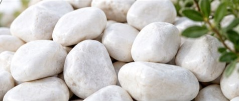

Natural stone solutions for a better tomorrow
İstanbul'un içinde rengarenk bir dünya
Peyzaj, döşeme ve dekorasyon için doğal taş, kayaç ve cam. Kendi ocağımızdan, kendi tamburlama tesisimizden; Türkiye'ye ve dünyaya.

Öne çıkan ürünTamburlanmış Dolomit →1973'ten beriİnşaat, madencilik ve doğal taşta aile şirketi
Kendi taş ocağıRuhsatlı sahadan doğrudan tedarik
Kendi tamburlama tesisiEbat ve renk seçeneğiyle üretim
FOB AmbarlıBig bag ve konteyner ile ihracat
Ürünler
Tüm ürünlerÜrün gruplarımız

Tamburlanmış Peyzaj TaşlarıDolomit, kalsit, mermer, dere çakılı, kalsedon

Cam Peyzaj ÜrünleriTamburlanmış ve kaya formu renkli camlar

Ebatlı Döşeme ve Kaplama TaşlarıTraverten, kayrak, granit, bazalt, mermer

Doğal KayaçlarMeteor, oniks, gnays, ağaç fosili, lav taşı

Doğal Taştan El Yapımı Peyzaj ÜrünleriOturma grubu, çeşme, fıskiye, saksı

Doğal Taş Heykel ve SütunlarMermer heykel, aslan, sütun, kaide

Akvaryum Taşları ve CamlarıKalsedon, falez, meteor parça, cam

Antik TaşlarDeğirmen taşı, dibek, kuyu ağzı, anfora

Öne çıkan ürün
Tamburlanmış Dolomit
Doğal · Dayanıklı · ZamansızPürüzsüz, yuvarlatılmış yüzeyli birinci kalite beyaz doğal taş. Peyzaj, bahçe tasarımı ve dekoratif uygulamalar için temiz, şık bir görünüm ve uzun ömürlü kullanım sunar.
3–5 cm5–10 cm10–15 cm
Toptan & ihracat
Big bag'den konteynere, FOB Ambarlı
Tamburlanmış taş ve camları big bag ile ya da tam konteyner olarak yüklüyoruz. Miktar, ebat ve varış limanını yazın; fiyat ve yükleme planını gönderelim.
1 Big Bag1,2–1,3 tortalama ağırlık
20 ft konteyner24–26 t20 big bag
40 ft konteyner48–52 t40 big bag
Referanslar
Tüm referanslarBizimle çalışanlar
Cumhurbaşkanlığı
TBMM
Ağaoğlu
Sinpaş
Varyap
Polimeks
Dünyagöz
Karaca Home
Nuhoğlu
Özyazıcı
Tema İstanbul
Bio Peyzaj
Projeniz için teklif alın
Ürünü, miktarı ve teslim yerini yazın; fiyat ve numune için size dönelim. Taşları Kemerburgaz'da yerinde de görebilirsiniz.